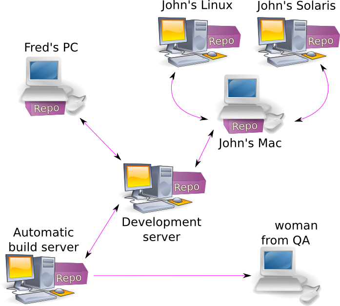
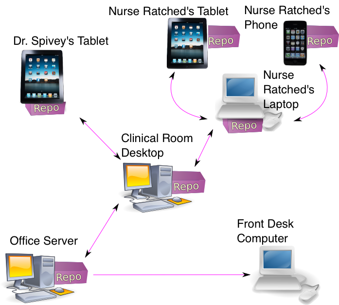

What is Git?
Open Source
Git is open source freely available application which tracks files
Distributed
Git tracks files in a distributed mannor.
Distributed

allowing for files to be shared and collaborated on in a more effective manor.
Secure
The data tracked by a Git repository is able to be transferred over secure protocols such ass SSH and HTTPS

What is Git EMR?
Open Source
Git EMR is open source freely available application which tracks files of electronic medical records
Distributed
Git EMR tracks electronic medical records in a distributed mannor.
Distributed

allowing for electronic medical records to be shared and collaborated on in a more effective manors.
Secure
The electronic medical records tracked by a Git EMR are able to be transferred using secure protocols such ass SSH and HTTPS.